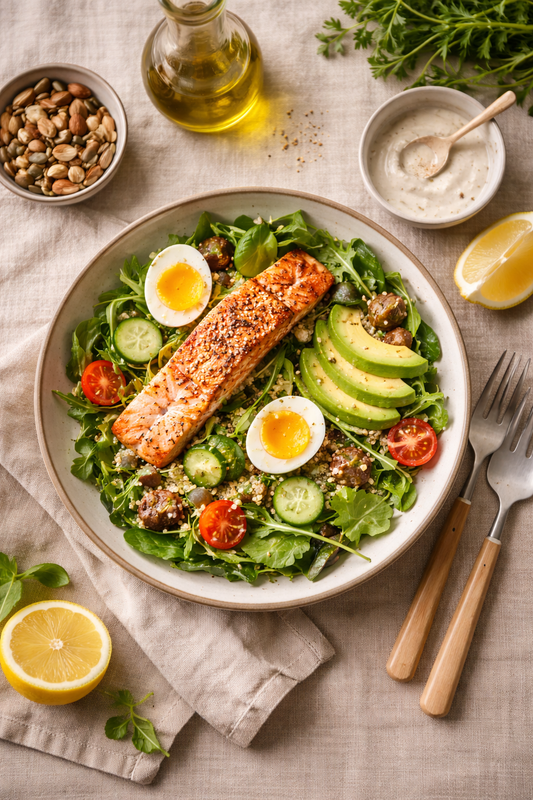
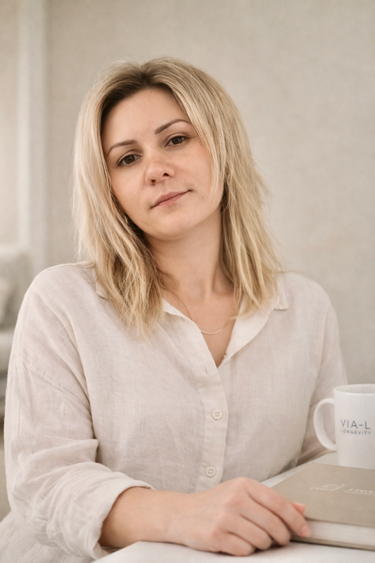

Персоналізована стратегія здоров'я для жінок у перименопаузі та менопаузі, а також для чоловіків після 40 в андропаузі.
✦ Працюю в обмеженому форматі, щоб зберегти справді персональний підхід. ✦
«Біологічний вік — це не вирок.
Це змінна, з якою можна працювати.»
Про підхід
Ми працюємо і з симптомами, і з причинами: полегшуємо стан уже зараз та паралельно прибираємо глибинні тригери. Кожне рішення спирається на ваші дані: аналізи, біохімію, спосіб життя.
Дані, не здогади
Гормональний профіль, маркери запалення, метаболізм — працюємо з вашою біохімією.
Харчування як інструмент
Протизапальний протокол і нутрицевтики — під ваш гормональний статус.
Доказова база
Кожна рекомендація підкріплена актуальними дослідженнями.
Довгостроковий результат
Стратегія на 3–6 місяців з адаптацією — не швидкий ефект, а стійкі зміни.
Ось як це виглядає в реальності на практиці
Чотири послідовні кроки: від першої розмови до стійкого результату, що залишається з вами.
Після знайомства — якщо обоє відчуваємо, що готові працювати — починається програма.
Спочатку знайомимося та глибоко розбираємо ваш спосіб життя, харчову поведінку й цілі. Визначаємо, що саме заважає тілу працювати на повну, і формуємо чітку точку відліку.
Аналізуємо лабораторні показники, виявляємо приховані дефіцити, запалення та гормональні дисбаланси. Дивимося на організм як на систему, а не як на набір симптомів.
Формуємо детальний протокол харчування та нутрієнтної підтримки під ваш унікальний біохімічний профіль і ритм життя. Жодних універсальних рішень.
Проводимо регулярні зустрічі, відстежуємо динаміку та гнучко коригуємо програму. Я поруч на кожному етапі, доки зміни не стануть частиною вашого життя.
Шлях до довголіття починається з одного кроку
Кожна програма — індивідуальний маршрут,
сформований під ваш біохімічний профіль
Зниження вазомоторних, психоемоційних та метаболічних симптомів через харчування і нутрицевтики.
Відновлення енергії, когнітивних та метаболічних функцій при зниженні тестостерону.
Уповільнення біологічного старіння через нутриціологію. Теломери, мітохондріальна функція.
Підтримка біотрансформації естрогену через харчування. Оптимізація печінки та кишківника.
Практичні PDF-матеріали — доступні одразу після оплати

Це формулювання, які я найчастіше чую від клієнтів.
Якщо хоча б одна фраза відгукується вам,
ми можемо допомогти.
Аналізи в нормі, а сил немає. Лікар каже — все гаразд, але я відчуваю, що щось не так.
Втома зранку, туман у голові, занепад сил — навіть після повноцінного сну.
Я стежу за харчуванням, ходжу в зал — але вага стоїть. Що б я не робила, тіло не змінюється.
Резистентність до інсуліну, приховані запалення або гормональний дисбаланс.
Мені 45, і я помічаю: настрій скаче, сон погіршав, я вже не та, що раніше.
Перименопауза і менопауза — час, коли харчування може стати найпотужнішим інструментом.
Після 50 стало важче тримати форму, концентрацію, тонус. Хочу почуватися краще.
Зниження тестостерону, втрата м'язової маси — це біохімія, і її можна скоригувати.
Я хочу не просто «не хворіти» — я хочу жити активно й енергійно ще 20, 30, 40 років.
Для тих, хто думає про здоров'я проактивно — до появи симптомів, на випередження.
Перепробував(ла) багато: дієти, БАДи, марафони. Все тимчасово. Хочу нарешті систему.
Персональний протокол, заснований на вашій біохімії — не універсальна схема.
Не впевнені, чи підійде вам цей підхід?
На першій консультації розберемо саме вашу ситуаціюМи лише на старті,
але перші історії вже в дорозі
✦ Тут з'являться реальні історії клієнтів ✦ Ми цінуємо чесність ✦

Я вірю, що кожен симптом — це повідомлення. Моє завдання — навчити вас читати його, а не заглушувати.
Я прийшла в нутриціологію через особистий досвід: роки втоми, яку лікарі називали «нормою», гормональні гойдалки та відчуття, що тіло живе своїм життям. Коли я зрозуміла, що харчування — це біохімія, а не калорії, усе змінилося., всё изменилось.
Сьогодні я працюю на перетині функціональної нутриціології та медицини довголіття. Мій підхід базується на лабораторній діагностиці, персональних протоколах і глибокій повазі до індивідуальності кожного клієнта. Без універсальних схем — лише ваша біохімія.
«Я не лікую симптоми. Я допомагаю тілу згадати, як працювати на повну силу — через харчування, яке говорить із вашою біохімією однією мовою.»
— Maryna Datsenko, основатель VIA-LНе знайшли відповіді?
Напишіть мені напряму
✦ Залишилися запитання? Напишіть — відповім особисто ✦
Написать на почтуПерша консультація — це простір для знайомства.
Без зобов'язань і без тиску.
Лише розмова про вас.
Готові зробити перший крок? ✦
Онлайн · Весь світ · RU / UA / ES | Відповідь протягом 24 годин